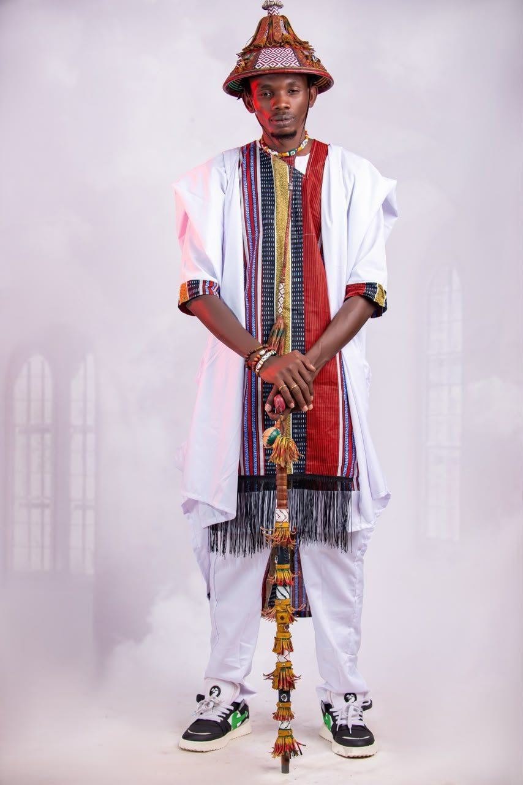
Né au bord
du fleuve Sénégal
De Thiemping aux scènes de Dakar : le parcours d'Ibrahima Sy, alias BB MC.
Accueil / Biographie
Le rap,
en pulaar
Originaire de Thiemping, village riverain du fleuve Sénégal dans la région de Matam, Ibrahima Sy — alias BB MC — est un rappeur engagé qui s'impose comme l'une des figures majeures du rap peul sénégalais.
Il débute en 2010 au sein du groupe Daranibé Goonga (D.G Team). Dès ses premiers freestyles, il se distingue par un style authentique mêlant rap pur, rythmes afro et une forte identité culturelle peule. En 2013, le morceau Wima Rap Bi Nileu le révèle au grand public.
Son écriture, à la croisée du conte peul et du rap urbain, puise dans la tradition pour mieux parler du présent : vie sociale, engagement, amour, identité. En 2025, il signe son premier album studio, Tinndi Tiiɗɗi (21 titres). En 2026, il donne son premier concert accompagné d'un orchestre live à la Maison de la Culture Douta Seck de Dakar.
Lauréat du concours Radio Matam, primé par les auditeurs
Finaliste du festival Fouta Pulaar Hip-Hop, Dakar
Finaliste du tremplin national Flow Up
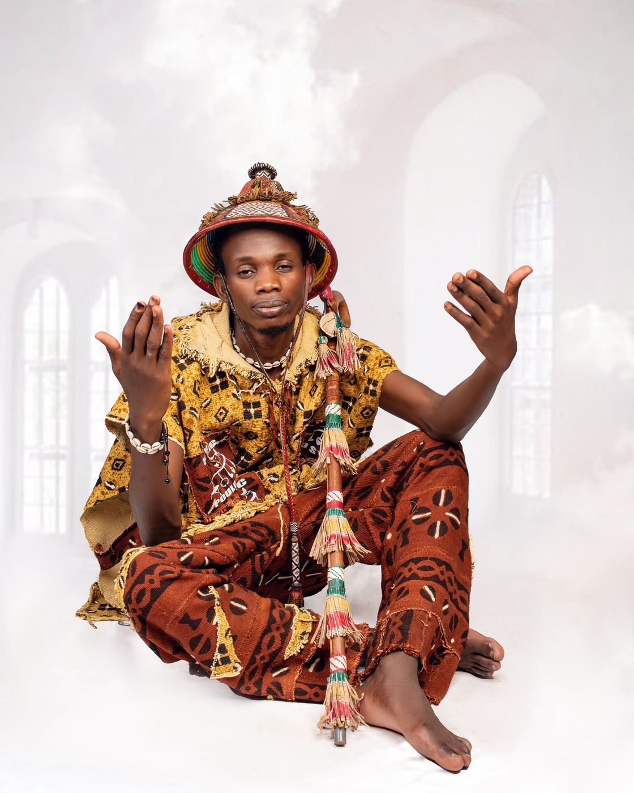
Le verbe devient un instrument de conscience, d'affirmation et de transmission.
BB MC incarne la nouvelle génération d'artistes africains qui revendiquent leurs racines tout en maîtrisant les codes du hip-hop. Artiste de scène autant que de réflexion, il fait du rap un pont entre les cultures. Son ambition : porter la voix du Fouta sur toutes les scènes du monde.
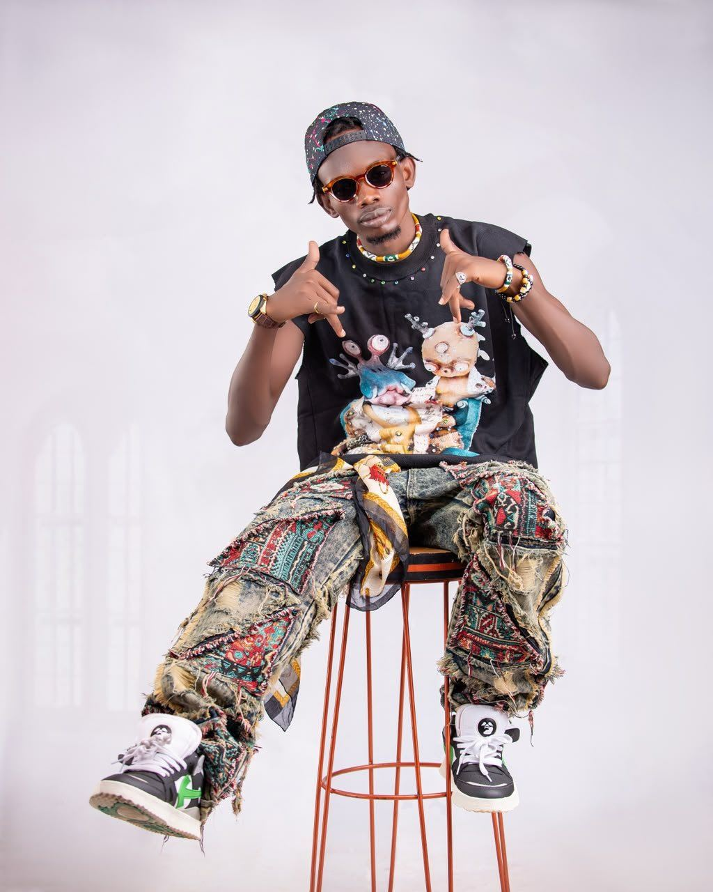
De Thiemping
à Douta Seck
- 2010
Les débuts
Naissance du groupe Daranibé Goonga (D.G Team), premiers freestyles.
- 2013
La percée
« Wima Rap Bi Nileu » le révèle. Succès dans le Fouta et en Mauritanie.
- 2017–19
Les distinctions
Lauréat Radio Matam, EP Mine Ndiédjitani (2018), finales FP2H et Flow Up.
- 2020–22
Naayi Laddé
Dow Dieri, Debbo Poulo, Boulél Ilo. Mixtape de 18 titres, tournée de 65 dates.
- 2023
Nofuru
Ko Min Fulbe, Konu, Barajagal, Jeysi, Nda Nda. Mixtape de 10 titres.
- 2024
Bañowo
Clip « Bañowo », Nofuru Tour et tournée des vacances.
- 2025
Tinndi Tiiɗɗi
Premier album (21 titres). « Debbo Lamdo » dépasse le million de vues.
- 2026
Le grand saut
Clip « Fuuta », premier concert live band à Douta Seck, singles « Amadou Koufa » et « Ben Laden ».
Shooting 2026
Cliquez sur une photo pour l'agrandir.

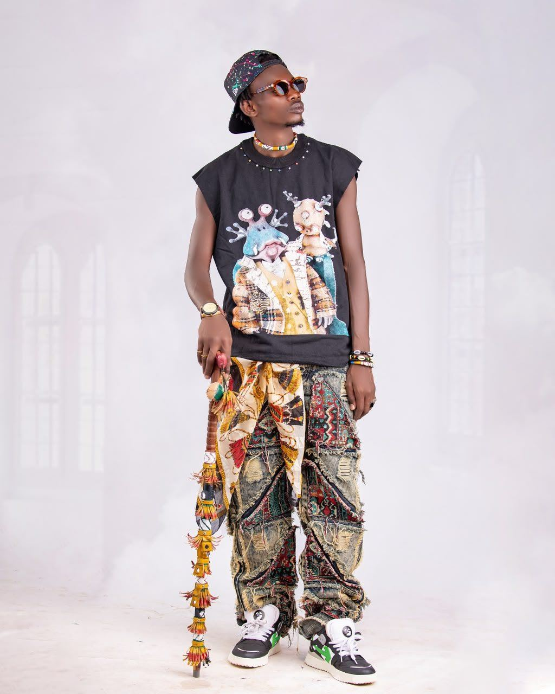

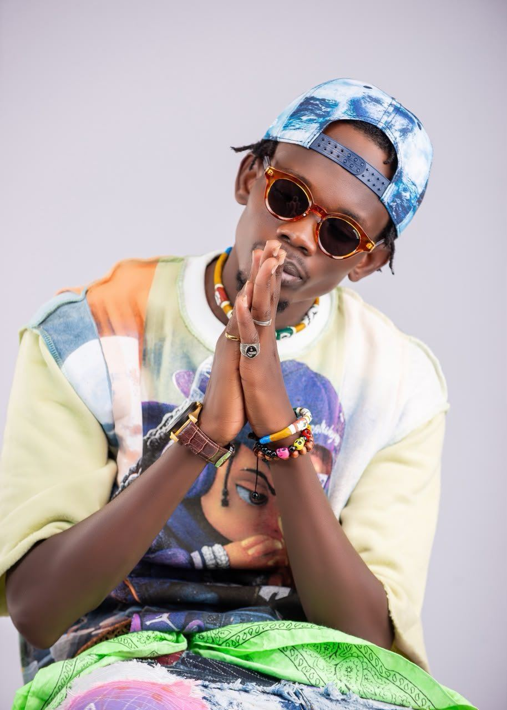

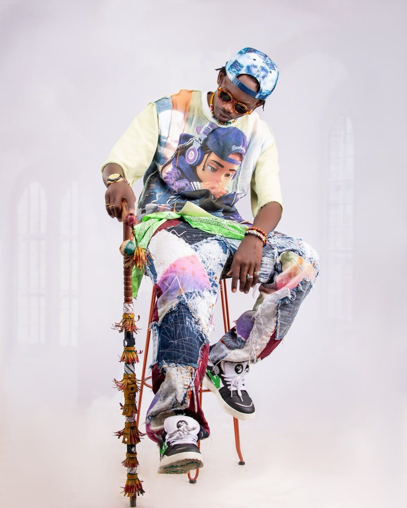

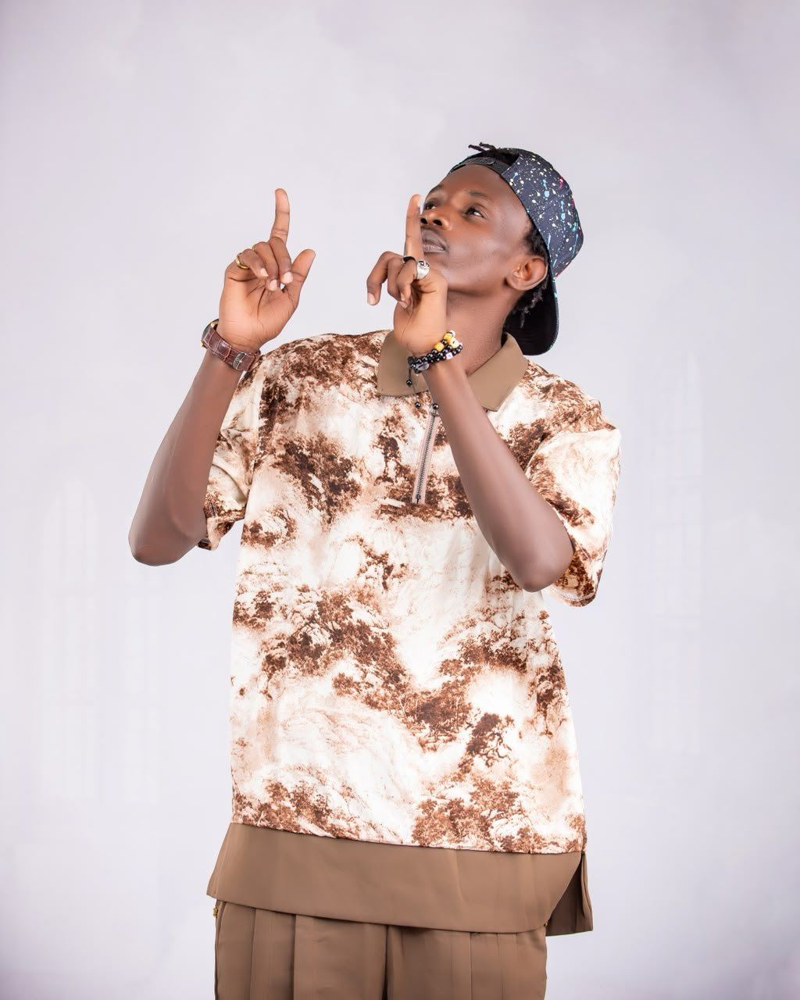

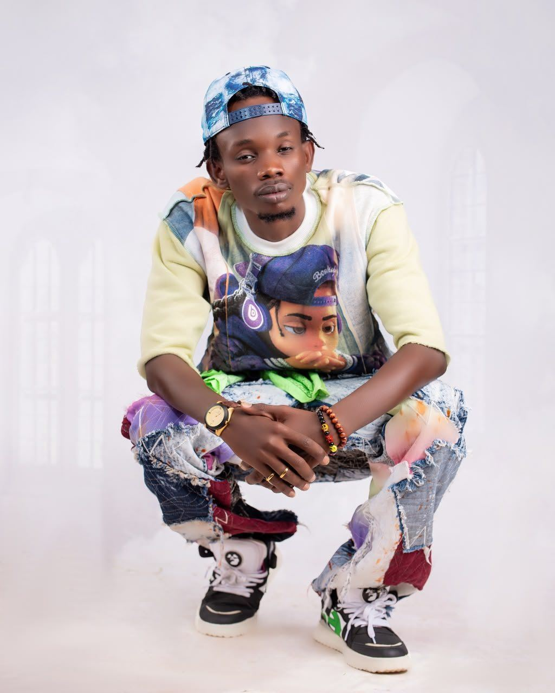

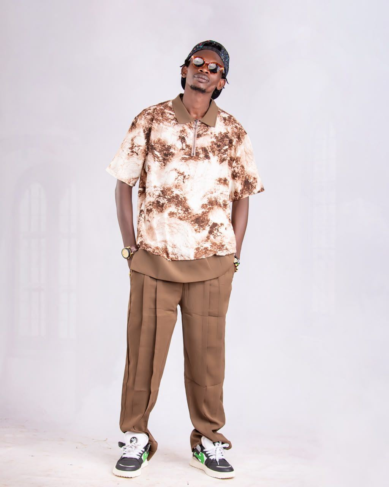


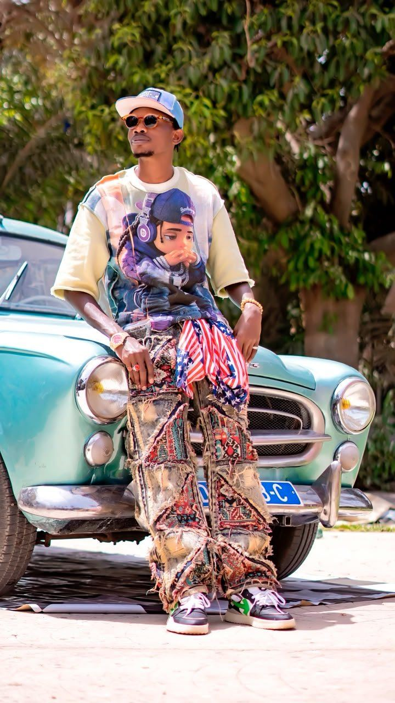

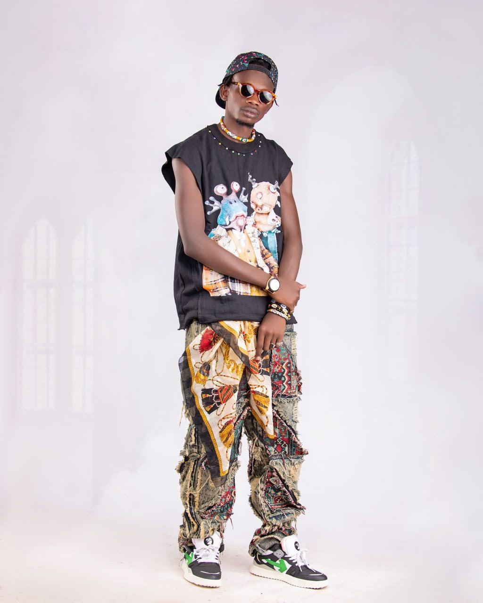

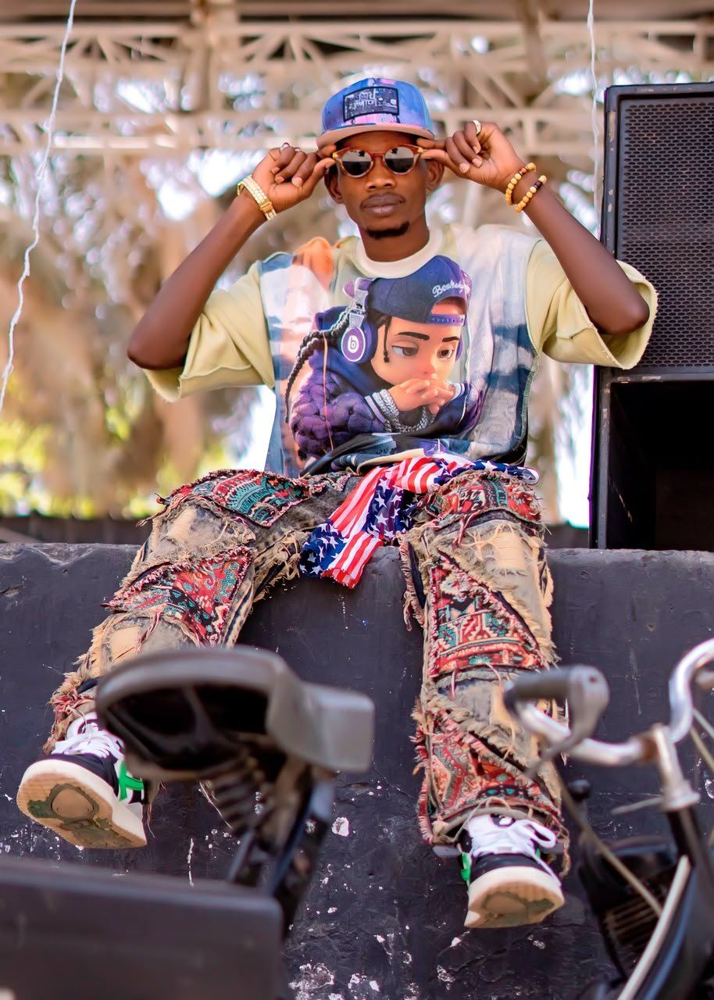

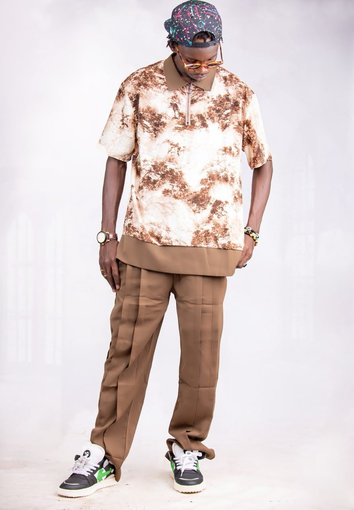

L'héritage peul
Chapeau conique, bâton de berger, bogolan et tissus tissés : BB MC fait de son héritage une signature visuelle, du studio à la scène.


Archives


Ils l'ont reçu
Radios, télévisions et médias internationaux. Analyse critique de l'album par Baya Seck et Farba Even's ; débats radio (Thialli Hip-Hop, Rap Fouta Connexion).


D.F.PROD
La maison de production qui accompagne BB MC : direction artistique, management, tournées et production audiovisuelle.
Contacter l'équipe- SALLBYDirecteur de production
Djiby Oumar Sall - KTNAssistant de production & manager général
Ibrahima Niang - Kaw Thiernal & DD GalsenManagers de production
- SaïdConsultant artiste